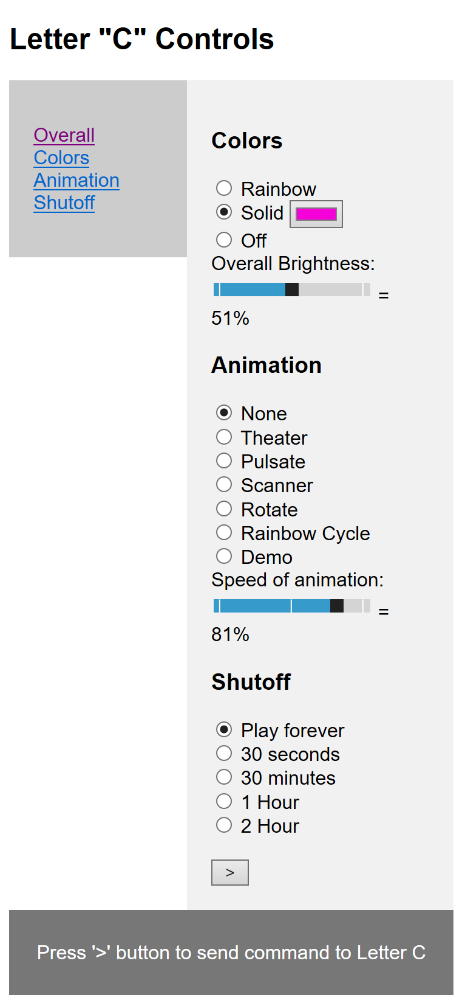

The LetterC has a built in microcomputer that runs a web server and contains web pages that let you control the LetterC from any web browser. To control the LetterC, pick an option in each of the three sections of controls shown below: Colors, Animation, and Shutoff, and then press the > (Play) button at the bottom. To shut off the LetterC display, select "off" in the Color section and press >. The Help sections in the left column call up additional help pages to give you more information about the display.

The Colors section lets you pick the colors of the LEDs that will be displayed
The Animation section lets you set how the pixels move and change colors over time.
The Shutoff section lets you pick a time for the LetterC display to shut off.
The > (Play) button at the bottom sends your choices to the LetterC display and you should see the LEDs (Pixels) light up in a few seconds.